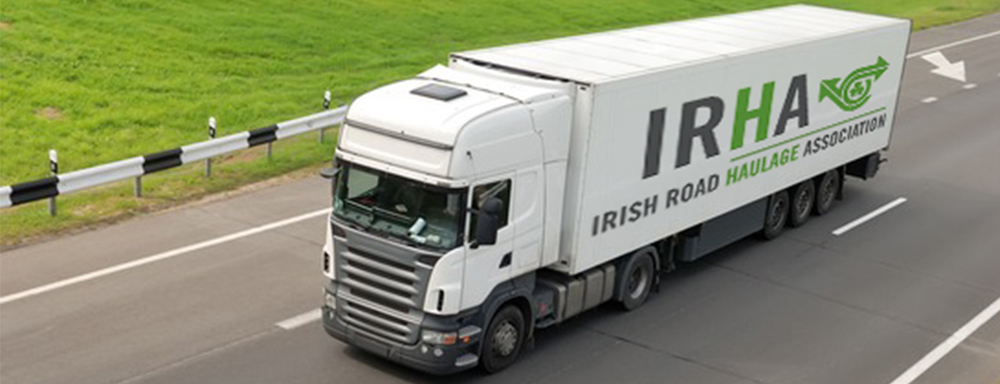

The IRHA is the recognised national representative body of the licensed road haulage industry in the Republic of Ireland. IRHA members operate under Road Haulage Operator Licenses issued by the Department of Transport. A Road Haulage Operator's License is required where goods are carried for hire or reward in a vehicle or combination of vehicles which is in excess of 3.5 (metric) tonnes. The IRHA was founded in 1973 with the purpose of representing and promoting the interests of Ireland's licensed road haulage industry - on a national and international level. Promoting professionalism, excellence and safety in road transport.

Back to start